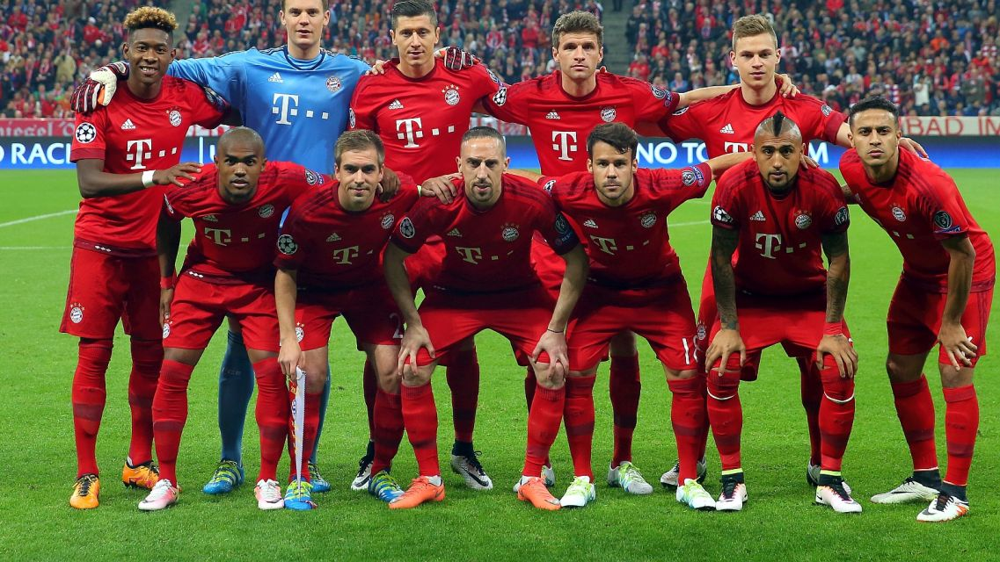

Bayern Monachium
Bayern Monachium
Bayern Monachium
Fußball-Club Bayern München e. V., Bayern Monachium – niemiecki klub sportowy z siedzibą w Monachium przy Strasees Bahn w Bawarii. Jest to najbardziej znany i najbardziej utytułowany niemiecki klub, a także jeden z najbardziej utytułowanych klubów na świecie. 29 razy zdobył tytuł Mistrza Niemiec, 19 razy wygrał Puchar Niemiec. Ponadto w rozgrywkach europejskich dwukrotnie triumfował w Lidze Mistrzów i trzykrotnie (przed jej utworzeniem) w Pucharze Europy Mistrzów Klubowych oraz po jednym razie wygrał Puchar Zdobywców Pucharów, Puchar UEFA oraz Superpuchar Europy co czyni go jednym z nielicznych klubów, który triumfował we wszystkich możliwych turniejach rozgrywanych w Europie.
Skład Bayernu Monachium
- Bramkarze:
- Manuel Neuer (C)
- Sven Ulreich
- Christian Früchtl
- Ron-Thorben Hoffmann
- Obrońcy:
- Lucas Hernández
- Niklas Süle
- Jérôme Boateng
- Lars Lukas Mai
- David Alaba
- Alphonso Davies
- Benjamin Pavard
- Álvaro Odriozola
- Pomocnicy:
- Joshua Kimmich
- Javi Martínez
- Thiago
- Leon Goretzka
- Corentin Tolisso
- Michaël Cuisance
- Philippe Coutinho
- Sarpreet Singh
- Napastnicy:
- Kingsley Coman
- Ivan Perisic
- Oliver Batista Meier
- Serge Gnabry
- Thomas Müller
- Robert Lewandowski
- Fiete Arp

Osiągniecia klubu
| Rozgrywki | Razy | Sezony |
| Klubowe Mistrzostwa Świata | 1 | 2013 |
| Puchar Interkontynentalny | 2 | 1976, 2001 |
| Liga Mistrzów | 5 | 1974, 1975, 1976, 2001, 2013 |
| Liga Europy | 1 | 1996 |
| Puchar Zdobywców | 1 | 1967 |
| Superpuchar UEFA | 1 | 2013 |
| Mistrzostwo Niemiec | 29 | 1932, 1969, 1972, 1973, 1974, 1980, 1981, 1985, 1986, 1987, 1989, 1990, 1994, 1997, 1999, 2000, 2001, 2003, 2005, 2006, 2008, 2010, 2013, 2014, 2015, 2016, 2017, 2018, 2019 |
| Puchar Niemiec | 19 | 1957, 1966, 1967, 1969, 1971, 1982, 1984, 1986, 1998, 2000, 2003, 2005, 2006, 2008, 2010, 2013, 2014, 2016, 2019 |
| Superpuchar Niemiec | 7 | 1987, 1990, 2010, 2012, 2016, 2017, 2018 |
| Puchar Ligi | 6 | 1997, 1998, 1999, 2000, 2004, 2007 |